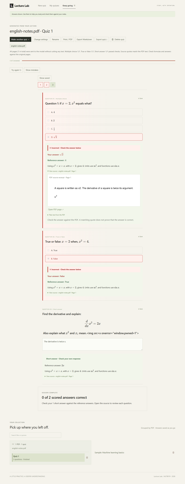
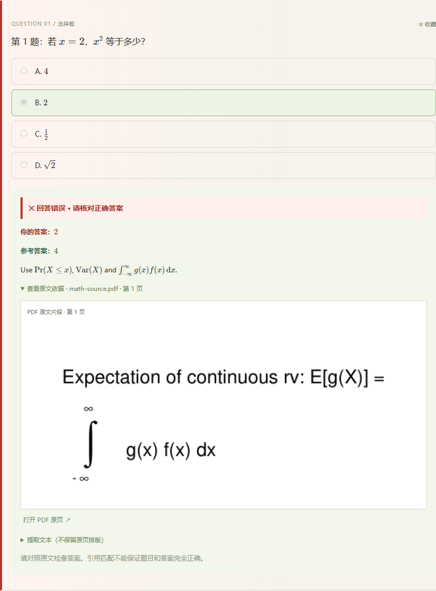

Read a lecture.
Practise with evidence.
Turn PDF lecture notes into a mixture of multiple-choice, true/false and short-answer questions. Check answers against original PDF passages and keep independent practice sets.
The project overview is static. Live generation uses the owner's Python service and DeepSeek API; it needs the host online, internet access and available API quota. The repository keeps the current temporary app address.
Practise from your own notes.
For students who want practice tied to their own readable lecture PDFs. The problem is the effort of writing practice questions and checking whether generated answers actually relate to the material. This project supports self-study; it does not issue official assessments, establish learning gains or automatically assess short-answer meaning.
Mixed practice
Set independent counts for three question types. Combine up to ten PDFs in a batch and generate further sets without replacing previous answers.
Check the source
Questions retain file identity, PDF page and a matching quotation. Original-page previews preserve math symbols that plain PDF text can lose.
Continue learning
Background jobs survive page hiding and refresh while the host runs. Quiz history, bookmarks, filters and exports support later review in the same browser.
Complete-input update (16 Nov): All PDF pages now supply full extracted text and a page image. Groups are limited to 10 PDFs and 80 total pages; oversized inputs are rejected instead of shortened. A real 39-page request retained two of three requested questions. Implementation and limits · Verification record. Earlier prompt-comparison results and the demo were recorded before this input update.
From your PDF to your quiz.
We built the Python/JavaScript application, complete PDF input with explicit size limits, mixed-type validation, source mapping, background-task recovery, browser persistence and practice interface. DeepSeek supplies language generation; pypdf and PyMuPDF supply PDF capabilities; KaTeX renders generated LaTeX. We did not train or fine-tune a model, and this is not an embedding-based retrieval system.
Math in your notes: mathematical lecture extraction can turn an integral into R, split Pr and flatten powers. Positional hints help generation; the evidence view renders the PDF itself rather than guessing lost symbols. Complete supporting quotations and named-operator rules address verifiability in probability/statistics practice.

A genuine run, on screen.
This separate demo records an actual request using the author-written two-page example, followed by answer review, original evidence, refresh recovery and a real image-only PDF rejection. The browser walkthrough is automated and the English narration is synthetic; both are disclosed in the opening. It is not the team presentation.
3 min 12 s · Recorded 16 November 2026 · Download demo · Narration transcript · Recording details. Recorded before the English interface update on 17 November; the video shows the earlier Chinese interface. The workflow and recorded results are unchanged.
Measured results, with their limits.
On 16 November 2026 we ran three SDST2601 lecture excerpts and one combined batch through the real production backend, once with each of two prompt variants. Each single-PDF batch requested six mixed questions; the combined batch requested three. The revised prompt asks for complete supporting quotes and better question construction.
| Batch | Requested | Initial accepted | Revised accepted |
|---|---|---|---|
| Discrete random variables | 6 | 6 | 6 |
| Continuous distributions | 6 | 5 | 6 |
| Distribution properties | 6 | 6 | 6 |
| Three PDFs combined | 3 | 3 | 3 |
| Total | 21 | 20 | 21 |
Exact-count batches: 3/4 initially and 4/4 revised. Median batch time: 17.494 s and 25.762 s, including retries. These single runs do not establish causation or general accuracy. Passing quotation checks does not prove answer correctness.
An AI-assisted audit flagged three initially incomplete quotes and one revised MCQ with an ambiguous “finite” distractor for “countable”. Human content review is still pending. We retain this issue rather than reporting a perfect accuracy score.
Evaluation protocol and failure analysis · Recorded result summary · Formatting repair and checks
Run a checkable example.
Download the author's own two-page math PDF. In the app request one MCQ, one true/false and one short answer. A recorded live response and expected facts are in the reproduction guide. That saved result is labelled as recorded, not a new live execution.
For an independent local copy, use Python 3.11+ and the pinned requirements. Configure your own provider key locally following the README; never commit it. The public host uses the owner's server-side key without sending it to visitors.
python -m pip install -r requirements.txt python launch.py python -m unittest discover -s tests -v python tools/reproduce_example.py
The final command checks the saved public example without calling a model. Add --live only to request new paid generation. Browser fixture tests use a simulated provider and are identified accordingly.

Failures, boundaries and responsible use.
- Observed shortfall: the initial continuous batch returned five of six requested questions. The app retained supported results and disclosed the shortfall.
- Observed boundary: an image-only scanned PDF was rejected with OCR guidance. OCR is not implemented.
- Observed bug and repair: an AES-locked PDF triggered an optional crypto dependency error. It now gives the correct unsupported-password-file message.
- Remaining content issue: a syntactically valid multiple-choice item can still be ambiguous. Source validation is not semantic grading.
- Availability/storage: live generation depends on the owner's host/tunnel/provider. Browser history is specific to device and origin; changed temporary domains do not carry history across automatically.
- Data and AI: selected text/hints are sent to the configured cloud provider. Course files were used with the user's local-study authorization, with redistribution permission unverified; original course PDFs are not published. Codex assisted code, tests, analysis and documentation. Independent student verification remains necessary.
Five actual parser boundary cases are recorded in the results summary. Input protection and simulated provider failure/recovery are also covered by automated tests. No claim of global access, guaranteed uptime, universal mathematical recovery or demonstrated learning improvement is made.